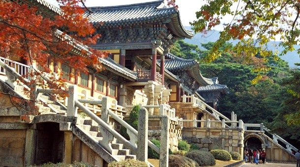
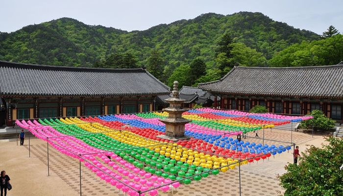

 El templo Bulguksa es la reliquia representativa de Gyeongju y fue designado Patrimonio Cultural de la Humanidad por la Unesco en 1995. La belleza del templo en sí y el toque artístico de las reliquias de piedra son bien conocidos en el mundo entero. Este templo budista, el cual está ubicado al sur de la ciudad de Seúl, capital de Corea del Sur, exactamente en la región de Gyeongju. Se caracteriza por ser el templo más famoso del Corea, debido a su rica arquitectura antigua, la cual le hizo merecedor de ser considerado Patrimonio Cultural de la Humanidad por la Unesco. Por consiguiente, la parte superior de la edificación simboliza la tierra buda, siendo este templo hogar para las pagodas de piedras Debotap, que hace referencia a lo femenino y Seokgatap, el cual da a conocer lo masculino, siendo estas reconocidas como tesoros nacionales. Por otra parte, cerca del templo se encuentra la gruta Seokguram que alberga una enorme estatua buda, símbolo principal. Es un lugar muy conocido y popular entre los coreanos, que acuden a él para su deleite, y de esta manera disfrutar del entorno, el cual se encuentra compuesto por muchísimas edificaciones, murallas, escaleras y pagodas. Cabe destacar que, puedes visitar este lugar reservando un tour en inglés con duración de un día completo y así maravillarte con la belleza de los edificios y jardines de este sitio.
 Es un templo budista de gran importancia ubicado en el Parque Nacional Gayasan, el cual se encuentra incluido en la exclusiva lista de Patrimonio de la Humanidad desde el año 1995. Este templo se encuentra rodeado de ríos, un gran bosque y diversos templos menores. Ubicado en la provincia de Gyeongsang del Sur, en la Montaña Gayasan, en un entorno de increíble paz y belleza, como se sitúan la mayor parte de templos budistas del país. Por otra parte, se dice que es uno de los más famosos del país porque dentro de él se encuentra Tripitaka coreana, la versión más antigua y completa encontrada de las escrituras budistas en caracteres chinos, los cuales se encuentran tallados en pequeños bloques de madera que datan del siglo trece aproximadamente. La misma contiene más de cincuenta millones de caracteres chinos clásicos. Aunque el pabellón donde se encuentra la Tripikata no puede ser visitado, si puedes recorrer el resto del templo donde se encuentra la zona administrativa, una tienda para comprar algún recuerdo y una cafetería para pasar el rato. Además contiene una estructura llamada Jong-gak, donde se encuentran guardados cada uno de los instrumentos musicales que son utilizados para las ceremonias.Con el paso de los años el templo ha sufrido varias reconstrucciones y renovaciones, una de las más importantes fue la que se realizó a inicios del siglo XIX, tras quedar casi completamente destruido por culpa de un incendio.